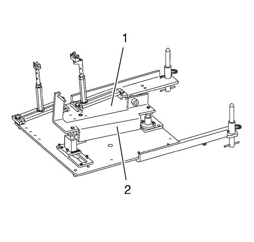
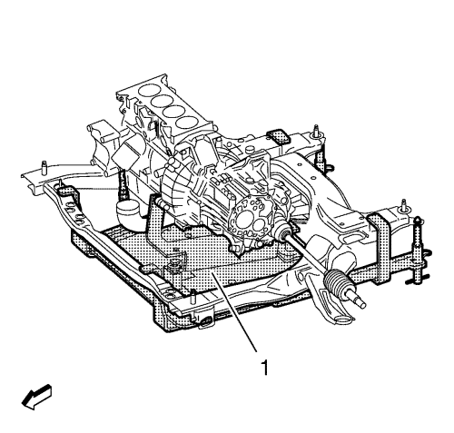
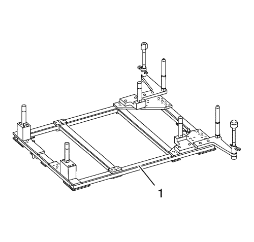
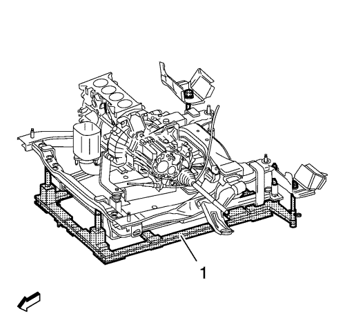

Soporte del motor/cambio — con CH-49289 y CH-49290
Herramientas especiales
| • | CH-49289 Bastidor de centrado |
| • | CH-49290 Herramienta de soporte del motor |
Si desea informarse sobre herramientas regionales equivalentes, consultar Herramientas especiales .
Monte la herramienta de soporte del motor CH-49290

Nota: El manual de instalación SPX se suministra con la herramienta especial, estando también disponible online directamente de SPX. Diríjase a www.spxtools-shop.com.
- Monte la herramienta de soporte del motor CH-49290 (1) según la información proporcionada en el manual de instalación SPX.
- Monte el soporte del par (2) en el motor.
Monte la herramienta de soporte del motor CH-49290
- Apoye el bastidor base CH-904 sobre un gato.
- Apoye la herramienta de soporte del motor CH-49290 sobre el bastidor base CH-904.

Nota: El manual de instalación SPX se suministra con la herramienta especial, estando también disponible online directamente de SPX
- Monte la herramienta de soporte del motor CH-49290 (1) según la información proporcionada en el manual de instalación SPX.
Monte el bastidor de centrado CH-49289

Nota: El manual de instalación SPX se suministra con la herramienta especial, estando también disponible online directamente de SPX
Monte el bastidor de centrado CH-49289 (1) según la información proporcionada en el manual de instalación SPX.
Monte el bastidor de centrado CH-49289
- Apoye el bastidor de centrado CH-49289 sobre el bastidor base CH-904.

Nota: El manual de instalación SPX se suministra con la herramienta especial, estando también disponible online directamente de SPX
- Monte el bastidor de centrado CH-49289 (1) según la información proporcionada en el manual de instalación SPX.
Retire el bastidor de centrado CH-49289
- Retire el bastidor de centrado CH-49289 (1).
- Retire el bastidor de centrado CH-49289 del bastidor base CH-904.
Desmonte el bastidor de centrado CH-49289
Desmonte el bastidor de centrado CH-49289 (1).
Retire la herramienta de soporte del motor CH-49290
- Retire la herramienta de soporte del motor CH-49290 (1).
- Retire la herramienta de soporte del motor CH-49290 del bastidor base CH-904.
- Retire el bastidor base CH-904 del gato.
Desmonte la herramienta de soporte del motor CH-49290
- Desmonte la herramienta de soporte del motor CH-49290 (1).
- Retire el soporte del par (2) del motor.
| © Copyright Chevrolet Europe. All rights reserved |